엘리하이 키즈로부터 제품과 원고료를 제공받아 작성하였습니다.
5세학습지를 알아보고 있다면 한글, 수학, 영어를 어떤 순서로 시작해야 할지, 종이 학습지와 태블릿 학습 중 무엇이 좋을지 등을 고민하게 됩니다.
특히 5세는 아이마다 한글을 익힌 정도와 숫자에 대한 이해도, 집중 시간에 차이가 있어 단순히 유명한 학습지를 선택하기보다 학습 구성과 관리 방법을 비교하는 것이 중요합니다.
2026년 기준 5세 유아학습지로 비교할 만한 브랜드는 엘리하이 키즈, 윙크, 밀크T아이, 웅진 스마트올 키즈, 교원 빨간펜, 구몬학습, 재능교육 등입니다.
이번 글에서는 7개 브랜드를 중심으로 다음 내용을 비교했습니다.
• 2026년 5세학습지 추천 순위 TOP 7
• 한글·수학·영어 과목별 학습 구성
• 태블릿 및 종이 학습지 차이
• 학습관리와 월 비용 비교
• 아이 성향에 따른 추천 학습지
• 무료체험 및 선택 시 확인할 사항
※ 아래 순위는 공식 판매량이나 객관적인 학습 효과 순위가 아닙니다. 5세의 기초학습 적합성, 과목 구성, 학습 방식, 관리 서비스 등을 기준으로 정리한 추천 순위입니다.
1. 2026년 5세학습지 추천 순위 TOP 7
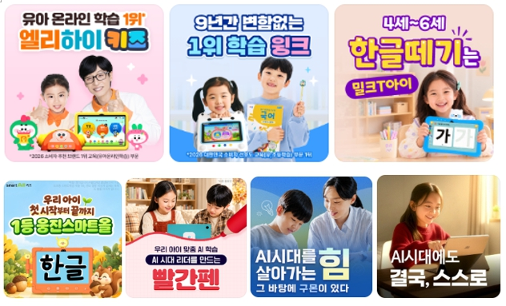
5세 아이가 이용할 수 있는 대표적인 유아학습지 7곳의 특징을 비교했습니다.
| NO | 학습지 브랜드 | 주요 학습 구성 | 특징 |
|---|---|---|---|
| 1 | 엘리하이 키즈 | 한글·수학·영어·독서·탐구·코딩·한자 등 | 종합학습, 지면교재, 유아교육 전문가 선생님의 1:1 화상 수업과 관리 |
| 2 | 윙크 | 한글·수학·영어 | 전용 학습기와 종이 학습지 병행 |
| 3 | 밀크T아이 | 한글·수학·영어 등 | 태블릿 기반 디지털 학습 |
| 4 | 웅진 스마트올 키즈 | 한글·수학·영어·독서 등 | 스마트학습과 독서 콘텐츠 |
| 5 | 교원 빨간펜 누리키즈 | 유아 기초학습 | 스마트 콘텐츠 중심 |
| 6 | 구몬학습 | 한글·수학·영어 등 | 과목별 단계학습과 반복 연습 |
| 7 | 재능교육 스스로학습 | 한글·수학·영어 등 | 수준별 종이 교재 중심 |
종합학습을 기준으로 비교하면 엘리하이 키즈를 우선 비교해볼만 합니다.
한글과 수학, 영어뿐 아니라 독서와 탐구 등 다양한 영역을 하나의 프로그램에서 학습할 수 있고, 전용 태블릿과 지면교재, 선생님의 화상관리까지 함께 이용할 수 있기 때문입니다.
반면 한글이나 수학 등 한 과목에 집중하고 싶다면 구몬학습과 재능교육처럼 과목별로 선택할 수 있는 학습지도 비교 대상입니다.
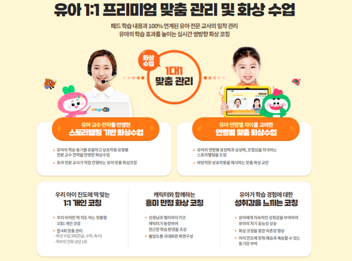
2. 5세학습지 브랜드별 특징과 추천 대상
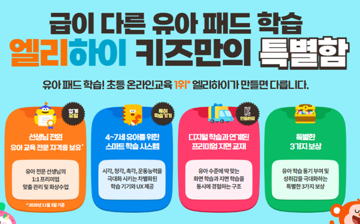
1. 엘리하이 키즈 – 한글·수학·영어를 함께 배우는 종합학습지
추천 대상: 한글·수학·영어를 골고루 배우고, 선생님의 정기적인 학습관리까지 원하는 5세
엘리하이 키즈는 4세부터 예비초등까지 이용할 수 있는 유아 종합학습 프로그램입니다.
한글·국어, 수학, 영어, 독서, 탐구, 코딩, 생활습관 등 다양한 학습 콘텐츠를 전용 태블릿으로 이용할 수 있습니다.
4세 5세 아이에게 필요한 기초학습부터 시작해 이후 단계까지 이어갈 수 있으며, 아이의 수준에 맞는 콘텐츠를 선택할 수 있습니다.
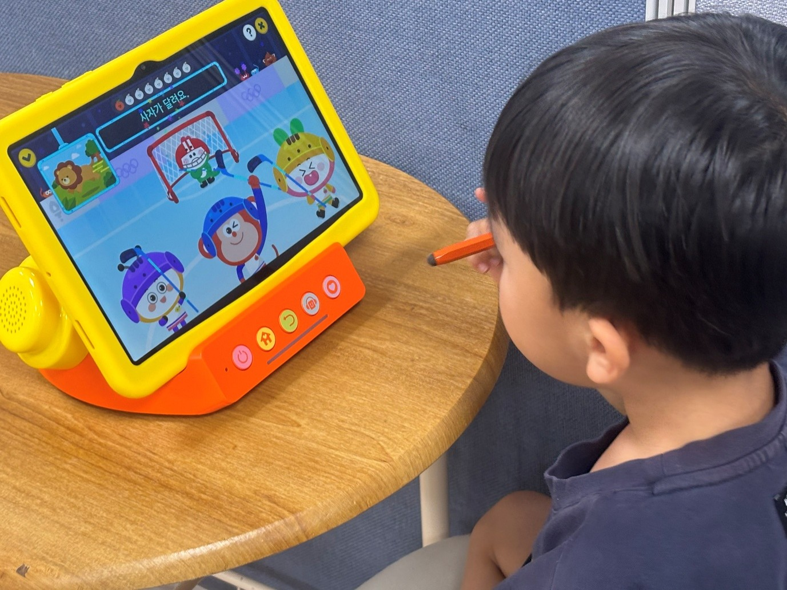
① 5세 한글학습
한글을 처음 접하는 아이는 그림과 소리를 활용한 말놀이, 통글자 학습부터 시작할 수 있습니다.
이후 자음과 모음, 낱말 읽기, 글자 쓰기, 어휘와 문장 학습으로 이어집니다.
이미 익숙한 낱말을 읽을 수 있는 아이라면 현재 수준에 맞춰 읽기와 쓰기 활동을 진행할 수 있습니다.
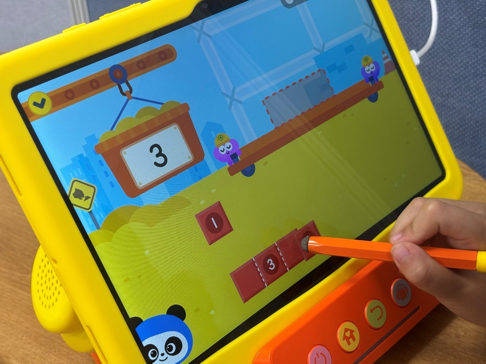
② 5세 수학학습
수학은 단순히 숫자를 외우는 것보다 수와 수량의 관계를 이해하는 것이 중요합니다.
엘리하이 키즈에서는 수 세기와 수량 비교, 분류, 규칙, 도형 등 유아기에 필요한 기초 수학 개념을 배울 수 있습니다.
이야기와 놀이형 활동을 활용해 개념을 익히고 문제를 풀어보는 과정으로 구성되어 있습니다.
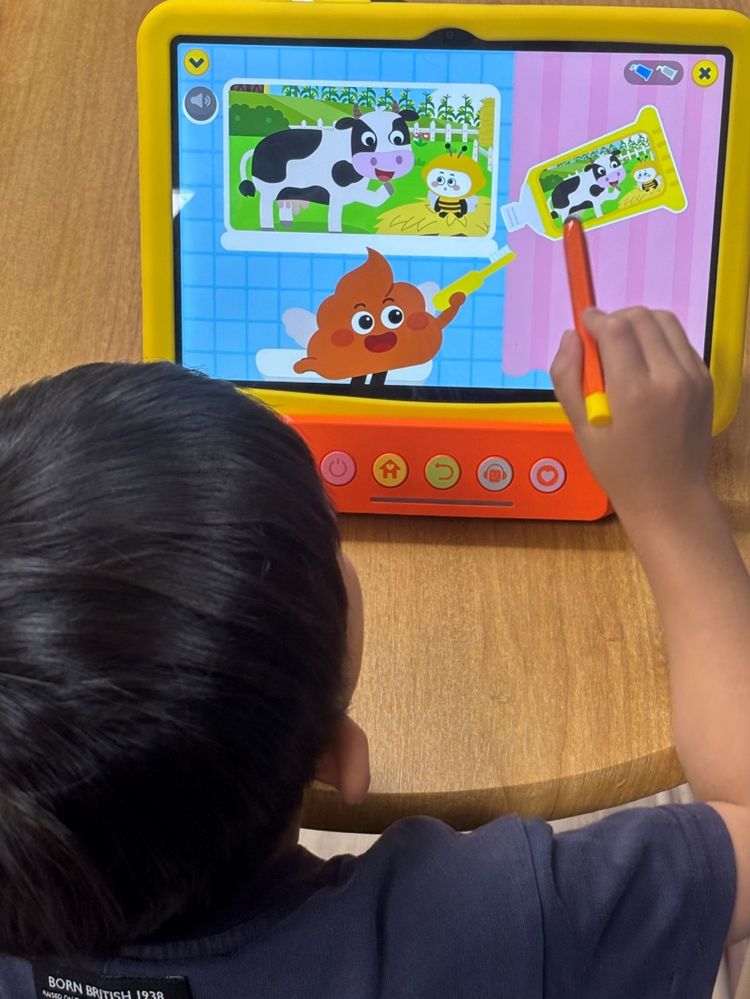
③ 5세 영어학습
영어 동요와 원어민 음성, 알파벳, 파닉스, 듣기와 따라 말하기 등 다양한 콘텐츠를 제공합니다.
영어를 처음 접하는 5세도 소리를 듣고 따라 하면서 기초 영어 표현에 익숙해질 수 있습니다.
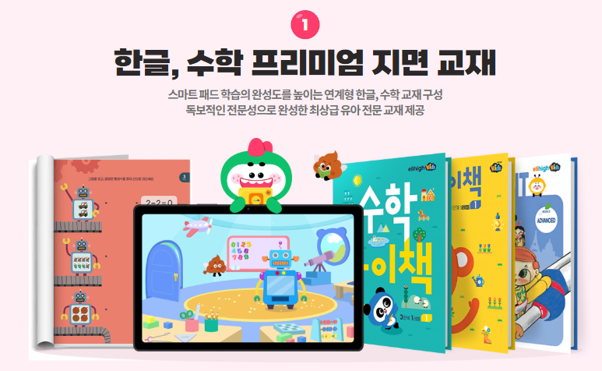
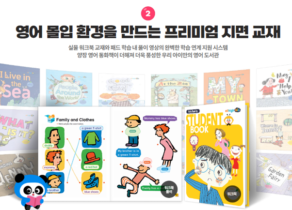
④ 태블릿과 지면교재 연계
전용 태블릿과 스마트 펜으로 학습한 내용을 지면교재에서 다시 연습할 수 있습니다.
글자를 직접 써보거나 선을 긋고 문제를 푸는 활동까지 함께 진행할 수 있어 디지털 학습과 종이 학습을 병행하려는 가정에서 살펴볼 만합니다.
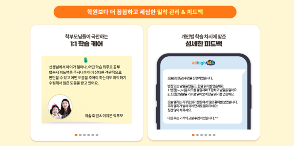
⑤ 1:1 화상 학습관리
엘리하이 키즈는 유아교육 전문가인 선생님의 1:1 화상관리도 제공합니다.
월별로 한글·수학·독서 관련 학습관리 3회와 학부모 상담 1회로 구성돼 있습니다.
또한 '오늘의 학습'을 통해 매일 공부할 내용을 확인할 수 있어 학습 일정을 관리하기에도 편리합니다.
엘리하이 키즈 주요 특징 요약
| 비교 항목 | 내용 |
|---|---|
| 학습 대상 | 4세~예비초등 |
| 주요 과목 | 한글·수학·영어·독서·탐구·과학 등 |
| 학습 방식 | 전용 태블릿+스마트펜+지면교재 |
| 학습관리 | 월 3회 1:1 화상관리, 월 1회 학부모 상담 |
| 무료체험 | 7일 |
| 추천 유형 | 전과목 기초학습 및 정기적인 관리 선호 |
엘리하이 키즈는 7일 무료체험을 통해 실제 학습 콘텐츠와 아이의 반응을 확인할 수 있습니다.
엘리하이 키즈 7일 무료체험 알아보기
https://mkids.mbest.co.kr/ad/?ptname=C4216
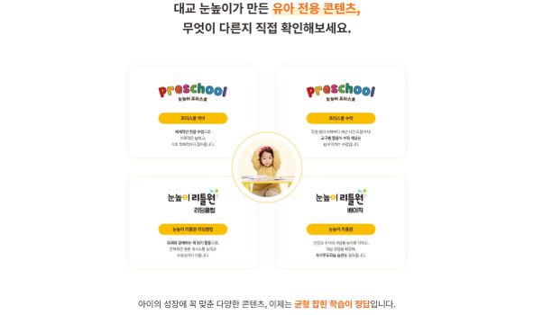
2. 윙크 – 놀이형 디지털 학습과 종이 학습지 병행
추천 대상: 학습을 처음 시작하거나 영상과 종이 활동을 함께 활용하고 싶은 아이
윙크는 한글·수학·영어 기초 학습을 중심으로 하는 유아교육 프로그램입니다.
전용 학습기에서 영상과 디지털 콘텐츠로 학습하고, 종이 학습지를 활용해 배운 내용을 복습할 수 있습니다.
한글을 처음 배우는 아이나 공부에 대한 부담을 줄이면서 기초학습을 시작하려는 가정에서 비교할 만합니다.
다만 세부 교재 구성과 관리 서비스는 선택하는 상품에 따라 확인이 필요합니다.
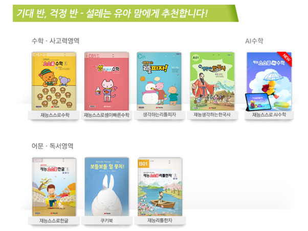
3. 밀크T아이 – 영상과 캐릭터 중심의 유아 스마트학습
추천 대상: 캐릭터, 영상, 디지털 활동을 좋아하는 아이
밀크T아이는 유아를 대상으로 한 태블릿 기반 학습 프로그램입니다.
한글과 수학, 영어 등 기초학습 콘텐츠를 제공합니다.
태블릿 활동에 관심이 많고 시청각 자료를 활용한 학습을 선호하는 아이에게 비교 대상이 될 수 있습니다.
지면교재와 학습관리의 구체적인 구성은 가입 상품별로 확인하는 것이 좋습니다.
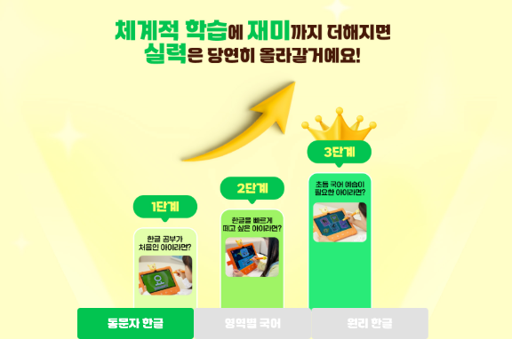
4. 웅진 스마트올 키즈 – 독서와 기초학습을 함께
추천 대상: 한글·수학·영어뿐 아니라 독서 콘텐츠도 중요하게 생각하는 가정
웅진 스마트올 키즈는 유아를 위한 디지털 학습 프로그램입니다.
한글, 수학, 영어 등 기초학습과 독서 관련 콘텐츠를 함께 살펴볼 수 있습니다.
그림책과 독서 활동에 관심이 많은 아이에게 적합한지 비교해 볼 만하며, 실제 이용 가능한 콘텐츠와 관리 서비스는 상품 안내를 통해 확인해야 합니다.
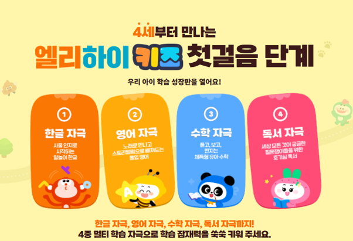
5. 교원 빨간펜 누리키즈 – 유아 기초학습 중심
추천 대상: 유아의 발달 수준에 맞춘 스마트학습을 원하는 가정
교원 빨간펜의 유아 대상 학습 프로그램은 디지털 콘텐츠를 활용한 기초학습을 중심으로 비교할 수 있습니다.
한글과 수학 등 기본적인 학습 영역을 어떻게 구성하는지, 아이의 수준에 따라 학습을 조절할 수 있는지 확인하는 것이 좋습니다.
상품명과 제공 서비스는 판매 시점에 따라 달라질 수 있으므로 현재 운영 중인 유아 프로그램을 기준으로 비교해야 합니다.
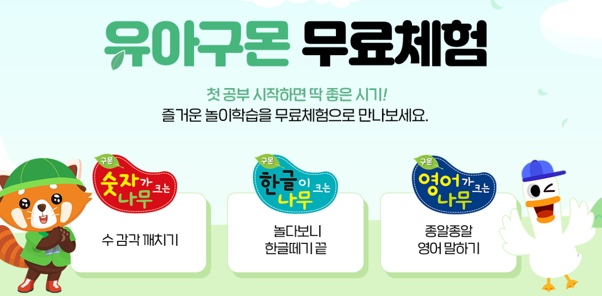
6. 구몬학습 – 한글·수학 등 과목별 반복학습
추천 대상: 과목 별 필요한 학습을 선택해 공부하고 싶은 가정
구몬학습은 아이의 현재 학습 수준에 맞춰 단계별 교재로 공부하는 프로그램입니다.
한글, 수학, 영어 등 필요한 과목을 선택할 수 있으며 작은 단계부터 반복적으로 학습하는 것이 특징입니다.
5세 한글학습이나 기초 수학을 꾸준히 연습하고 싶은 가정에서 살펴볼 수 있습니다.
과목 수에 따라 총 학습비가 달라지므로 여러 과목을 이용할 계획이라면 전체 비용을 계산해야 합니다.
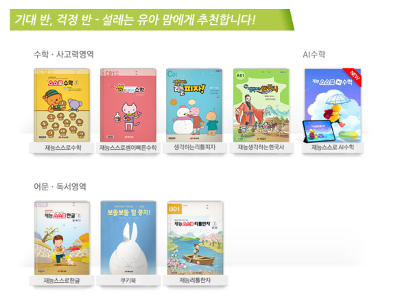
7. 재능교육 스스로학습 – 종이 교재 중심의 수준별 학습
추천 대상: 연필로 쓰고 문제를 푸는 활동을 좋아하는 아이
재능교육은 수준별 교재를 활용하는 과목별 학습 프로그램입니다.
한글과 수학, 영어 등 필요한 과목을 선택할 수 있으며 단계별 지면 학습을 중심으로 공부합니다.
태블릿보다는 종이 학습지로 글자를 쓰고 문제를 풀어보는 활동을 선호하는 아이에게 비교 대상이 될 수 있습니다.
3. 2026년 5세학습지 가격 비교
5세학습지 가격은 브랜드별로 차이가 있으며, 같은 브랜드라도 약정 기간과 과목 수, 학습기 제공 여부, 선생님 관리 서비스에 따라 월 이용료가 달라집니다.
온라인에서 확인할 수 있는 과거 가격 정보가 현재 가입 금액과 일치하지 않을 수도 있습니다.
따라서 2026년 학습지 가격을 비교할 때는 월 이용료뿐 아니라 전체 계약 금액을 확인해야 합니다.
| 학습지 | 가격 구조 | 확인할 사항 |
|---|---|---|
| 엘리하이 키즈 | 종합학습 상품별 상담 | 약정 기간, 태블릿, 지면교재, 실제 선생님의 맞춤 화상관리 |
| 윙크 | 상품·약정별 이용료 | 학습기, 종이 교재, 관리 서비스 |
| 밀크T아이 | 상품·약정별 이용료 | 태블릿, 교재, 계약 기간 |
| 웅진 스마트올 키즈 | 상품별 상담 | 학습 콘텐츠, 기기, 관리 조건 |
| 교원 빨간펜 | 상품별 상담 | 학습 프로그램과 서비스 구성 |
| 구몬학습 | 과목별 이용료 | 선택 과목 수와 관리 형태 |
| 재능교육 | 과목별 이용료 | 과목 수, 교재, 교사 관리 |
※ 위 표는 가격 구조를 비교한 것으로, 2026년 11월의 확정 월 이용료를 의미하지 않습니다. 정확한 금액은 각 브랜드의 공식 상담을 통해 확인해야 합니다.
학습지 가성비는 월 이용료만으로 판단하기 어렵습니다.
예를 들어 한글 한 과목만 공부한다면 과목별 학습지가 경제적일 수 있지만, 한글과 수학, 영어를 모두 배우려면 여러 과목의 이용료를 합산해야 합니다.
반대로 종합학습지는 월 이용 금액 내에서 다양한 과목과 교재, 학습관리 서비스 이용이 가능합니다.
가성비 비교 시 확인할 항목은 다음과 같습니다.
1. 월 이용료와 전체 약정 금액
2. 한글·수학·영어 과목 포함 여부
3. 태블릿 및 지면교재 비용
4. 선생님 학습관리 횟수
5. 중도 해지 및 기기 반납 조건
같은 예산이라도 실제로 이용할 과목과 서비스에 따라 선택 결과가 달라질 수 있습니다.
4. 5세 한글·수학·영어 학습 효과, 무엇을 비교해야 할까?
5세학습지를 선택할 때는 브랜드별 학습 콘텐츠가 아이의 현재 수준에 맞는지 확인하는 것이 중요합니다.
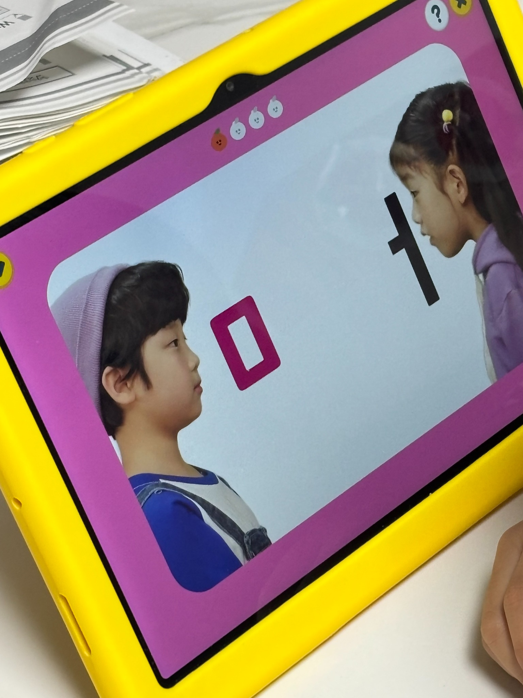
① 한글학습 – 글자에 대한 관심부터 읽기·쓰기까지
한글을 전혀 모르는 5세라면 글자를 외우기 전에 소리와 글자 모양에 친숙해지는 활동부터 시작할 수 있습니다.
자음과 모음을 조금 아는 아이라면 글자 조합과 낱말 읽기, 따라 쓰기 등을 연습할 수 있습니다.
한글을 어느 정도 읽는 아이라면 짧은 문장을 이해하고 그림책 내용을 이야기하는 활동으로 확장할 수 있습니다.
엘리하이 키즈처럼 말놀이부터 읽기·쓰기와 독서까지 연결되는 프로그램은 여러 단계의 한글학습을 함께 살펴볼 수 있습니다.
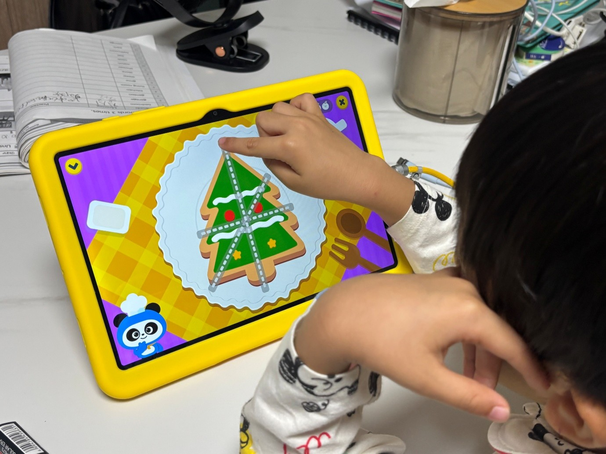
② 수학학습 – 숫자 암기보다 수 개념 이해
5세 수학에서는 숫자를 얼마나 많이 외우는지보다 수량을 이해하고 비교할 수 있는지가 중요합니다.
물건의 개수를 세거나 크기와 길이를 비교하고, 같은 모양을 분류하고 규칙을 찾는 활동 등이 해당됩니다.
수학학습지를 비교할 때는 수 세기, 수량 비교, 분류, 도형, 규칙 등 기초 개념을 아이 눈높이에 맞춰 배우는지 확인해 보세요.
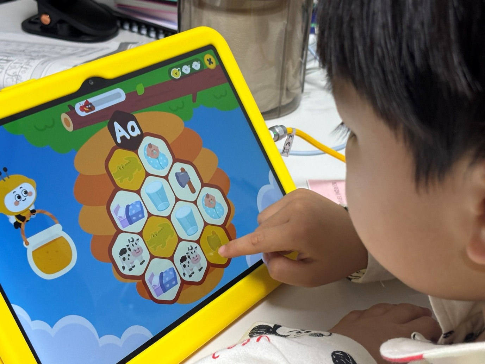
③ 영어학습 – 듣기와 말하기 중심의 기초 노출
영어를 처음 접하는 5세에게는 알파벳 암기만큼 영어 소리에 친숙해지는 과정도 중요합니다.
영어 동요를 듣거나 간단한 표현을 따라 말하고, 그림과 단어를 연결하는 활동부터 시작할 수 있습니다.
영어학습지를 선택할 때는 원어민 음성, 듣기 활동, 발음 따라 하기, 알파벳과 파닉스 등 아이 수준에 맞는 콘텐츠가 있는지 비교하는 것이 좋습니다.
5. 5세학습지, 종이 학습지와 태블릿 중 무엇이 좋을까?
5세학습지는 크게 종이 교재 중심, 태블릿 중심, 디지털·종이 병행 학습으로 구분할 수 있습니다.
| 학습 방식 | 특징 | 비교할 브랜드 |
|---|---|---|
| 종이 학습지 | 글자 쓰기, 선 긋기, 문제풀이 | 구몬, 재능교육 |
| 태블릿 학습 | 영상, 소리, 터치 활동 | 엘리하이 키즈, 밀크T아이, 웅진 스마트올 키즈 |
| 태블릿+종이 병행 | 디지털 개념학습과 지면 복습 | 엘리하이 키즈, 윙크 |
| 1:1 화상관리 | 선생님과 학습 진도 확인 | 엘리하이 키즈 |
태블릿 학습은 영상과 소리를 통해 한글과 수학 등 기초 개념을 익힐 수 있고, 종이 학습지는 직접 글자를 쓰거나 문제를 풀면서 배운 내용을 복습할 수 있습니다.
두 가지 학습을 함께 활용하고 싶다면 엘리하이 키즈가 좋은 선택이 될 수 있습니다.
전용 태블릿으로 한글·수학·영어 등 다양한 과목을 공부하고, 지면교재로 쓰기와 문제풀이를 이어갈 수 있는데요.
유아교육 전문가의 1:1 화상관리도 받을 수 있어 아이의 학습 진도와 수준을 꾸준히 관리하고 싶은 가정에 추천합니다.
6. 아이 성향별 5세학습지 추천
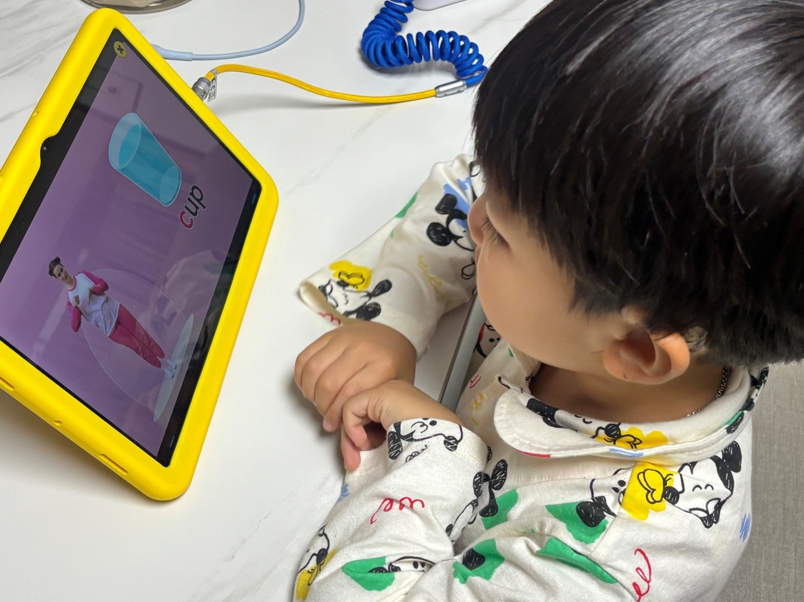
5세학습지는 모든 아이에게 동일한 브랜드가 가장 좋은 것은 아닙니다.
아이의 한글 수준과 학습 목표, 선호하는 활동에 따라 선택이 달라질 수 있습니다.
| 아이의 학습 성향 및 목표 | 우선 비교할 학습지 |
|---|---|
| 한글·수학·영어를 골고루 배우고 싶어요 | 엘리하이 키즈 |
| 태블릿과 종이 학습지를 함께 사용하고 싶어요 | 엘리하이 키즈, 윙크 |
| 놀이형 콘텐츠로 공부를 시작하고 싶어요 | 엘리하이 키즈, 밀크T아이 |
| 영상과 캐릭터를 좋아해요 | 엘리하이 키즈, 밀크T아이 |
| 독서 콘텐츠도 함께 살펴보고 싶어요 | 엘리하이 키즈, 웅진 스마트올 키즈 |
| 한글이나 수학 등 한 과목에 집중하고 싶어요 | 구몬학습, 재능교육 |
| 실제 선생님의 정기적인 화상관리를 원해요 | 엘리하이 키즈 |
| 종이 학습지로 직접 쓰는 연습을 하고 싶어요 | 엘리하이 키즈, 윙크, 구몬학습, 재능교육 |
한글을 처음 배우면서 수학과 영어도 함께 접하고 싶은 5세라면 종합학습 프로그램부터 비교하는 것이 좋습니다.
반면 특정 과목을 집중적으로 연습해야 한다면 과목별 학습지를 선택하는 것도 방법입니다.
7. 5세학습지 추천 FAQ
Q1. 5세학습지 추천 순위 1위는 어디인가요?
한글·수학·영어 등 다양한 과목을 골고루 배우고 싶다면 개인적으로 엘리하이 키즈를 추천하고 싶습니다.
전용 태블릿과 지면교재를 함께 활용할 수 있고, 유아교육 전문가의 1:1 화상관리까지 제공해 기초학습부터 공부 습관 형성까지 체계적으로 관리할 수 있습니다.
다만 아이의 학습 수준과 선호하는 학습 방식에 따라 적합한 학습지는 달라질 수 있으므로 각 브랜드의 특징을 비교한 후 선택하는 것이 좋습니다.
Q2. 한글을 전혀 모르는 5세에게 어떤 학습지가 좋을까요?
한글을 처음 배우는 5세라면 그림과 소리를 통해 글자에 익숙해지는 것부터 시작하는 것이 좋습니다.
엘리하이 키즈는 말놀이와 통글자 학습으로 한글에 친숙해진 뒤 자음·모음, 낱말 읽기, 글자 쓰기까지 단계별로 공부할 수 있습니다. 아이의 한글 수준에 맞춰 기초부터 차근차근 배울 수 있어 처음 시작하는 한글학습지로 추천합니다.
Q3. 5세부터 한글·수학·영어를 모두 공부해도 될까요?
가능하지만 하루에 모든 과목을 길게 공부할 필요는 없습니다.
처음에는 아이가 관심을 보이는 한두 가지 활동부터 시작하고, 학습에 익숙해지면 다른 과목으로 넓혀가는 것이 좋습니다.
Q4. 5세학습지는 하루에 몇 분 정도 학습하는 게 적당할까요?
처음 학습을 시작한다면 하루 10~15분 정도를 출발점으로 삼을 수 있습니다.
다만 모든 아이에게 동일한 시간이 적합한 것은 아니므로 아이의 집중 시간과 반응에 따라 학습량을 조절해야 합니다.
Q5. 5세학습지 가격은 월 얼마인가요?
학습지 가격은 과목별 상품인지 종합학습 상품인지에 따라 달라집니다.
태블릿 제공 여부, 약정 기간, 선생님 관리 서비스 등도 비용에 영향을 줍니다.
월 이용료만 비교하지 말고 계약 기간 동안 지불하는 전체 비용과 포함 서비스를 함께 확인해야 합니다.
Q6. 5세학습지 무료체험이 가능한 곳은 어디인가요?
엘리하이 키즈는 7일 무료체험을 제공합니다.
다른 브랜드도 체험 프로그램을 운영할 수 있으나 기간과 신청 조건이 달라질 수 있으므로 공식 홈페이지에서 확인하는 것이 좋습니다.
Q7. 5세학습지와 방문학습지는 어떤 차이가 있나요?
방문학습지는 선생님이 정해진 일정에 방문해 교재 학습과 진도 관리를 진행하는 형태가 일반적입니다.
스마트학습지는 태블릿을 중심으로 학습하며, 상품에 따라 화상관리나 별도의 교재가 제공됩니다.
아이의 학습 성향과 부모가 원하는 관리 형태에 따라 선택할 수 있습니다.
Q8. 5세학습지 선택 시 가장 중요한 기준은 무엇인가요?
브랜드 인지도보다 아이의 현재 수준에 맞는 학습 콘텐츠인지 확인하는 것이 중요합니다.
특히 한글 수준, 수 개념 이해도, 선호하는 학습 방식, 학습관리 필요성, 월 예산을 함께 고려해야 합니다.
8. 결론｜2026년 5세학습지 추천, 어떤 브랜드를 선택할까?
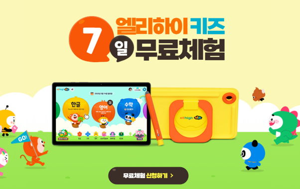
2026년 5세학습지로는 엘리하이 키즈, 윙크, 밀크T아이, 웅진 스마트올 키즈, 교원 빨간펜, 구몬학습, 재능교육 등을 비교해 볼 수 있습니다.
그중 한글·수학·영어부터 독서와 탐구 활동까지 골고루 배우고 싶다면 엘리하이 키즈를 추천합니다.
전용 태블릿과 지면교재를 함께 활용할 수 있고, 유아교육 전문가의 1:1 화상관리까지 받을 수 있어 기초학습과 공부 습관을 함께 챙기기 좋습니다.
엘리하이 키즈는 7일 무료체험도 가능하니 5세학습지를 고민하고 계신다면 아이와 직접 이용해 보세요. 학습 콘텐츠와 교재 구성, 선생님의 관리 방식까지 살펴본 후 우리 아이에게 잘 맞는지 확인해 보시기 바랍니다.
엘리하이 키즈 7일 무료체험
https://mkids.mbest.co.kr/ad/?ptname=C4216
자료 기준: 2026년 11월 작성. 브랜드별 공개 학습 프로그램 정보 및 제공된 엘리하이 키즈 서비스 안내를 바탕으로 비교했습니다. 추천 순위는 공식 판매량이나 학습 성과를 나타내지 않으며, 상품 구성·가격·학습관리·무료체험 조건은 변경될 수 있습니다. 게시 전 각 브랜드의 공식 홈페이지에서 최신 정보를 확인하시기 바랍니다.